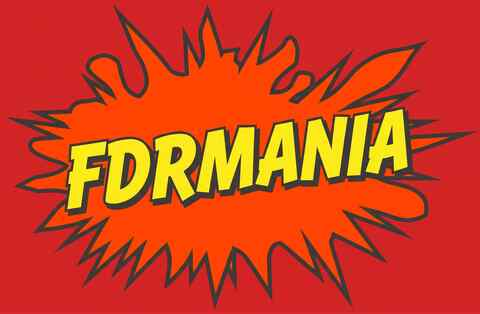
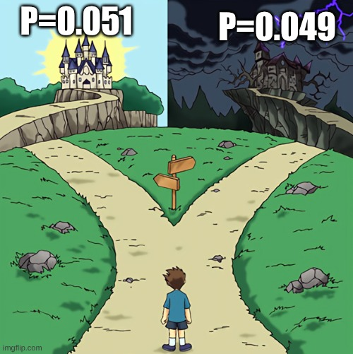

|
/\/\/\/\/\
¡EN CONSTRUCCIÓN!
/\/\/\/\/\ Un obrero está ajustando tus p-valores. Vuelva pronto. |
[ Salón de la Fama | El Colador | Muro de la Vergüenza | Bonferroni Apesta ]
|
En 1995, Yoav Benjamini y Yosef Hochberg publicaron en el Journal of the Royal Statistical Society, Series B un artículo de doce páginas que cambió la pregunta. Ya no: ¿cuál es la probabilidad de equivocarme al menos una vez? Sino: de todo lo que voy a llamar descubrimiento, ¿qué fracción espero que sea humo? A esa fracción esperada la llamaron False Discovery Rate. El propio Benjamini ha contado que el artículo dio vueltas varios años, rechazo tras rechazo, antes de encontrar casa. Hoy es uno de los papers de estadística más citados de la historia. ► Benjamini & Hochberg (1995). Controlling the False Discovery Rate: A Practical and Powerful Approach to Multiple Testing. JRSS-B 57(1), 289–300. |
|
Pega tus p-valores (separados por espacios, comas o saltos de línea; vale 0,03 y 0.03). Vienen cargados los quince del ejemplo del paper original. |
|
Receta del artículo con tres asteriscos: coge 60 variables, cruza todas con todas (1770 correlaciones), y publica las que salgan con p < 0,05. Aquí hacemos lo mismo, pero con ruido puro: 60 variables independientes, 100 casos, ninguna relación real. Ninguna. ¿Por qué casi nunca sobrevive nada? Cuando todas las hipótesis nulas son ciertas, todo descubrimiento es falso, y controlar la tasa de falsos descubrimientos equivale a controlar la probabilidad de colar uno solo: con q = 0,05, más o menos uno de cada veinte papers de ruido sale con algo. El colador no se deja engañar por el ruido puro.  ¿Por qué tiene gracia? En el meme de siempre, el investigador llora por su 0,051. Aquí es al revés: el 0,051 lleva al castillo y el 0,049 a la casa encantada, porque un p-valor que cae justo por debajo de la raya es sospechoso. Y la sospecha está medida. Masicampo y Lalande (2012) encontraron en revistas de psicología muchos más p-valores justo por debajo de 0,05 de los que cabría esperar: es la huella del p-hacking, retocar el análisis hasta cruzar la línea y parar ahí. La curva p de Simonsohn, Nelson y Simmons (2014) lo convierte en prueba: si hay un efecto real, los p-valores significativos se amontonan cerca de cero; si se amontonan pegados a 0,05, alguien ha estado retocando. Y el fondo del chiste lo dijeron Gelman y Stern (2006): entre 0,049 y 0,051 no hay ninguna diferencia de evidencia, solo de destino editorial. ► Masicampo & Lalande (2012). A Peculiar Prevalence of p Values Just Below .05. Quarterly Journal of Experimental Psychology 65(11), 2271–2279. |
|
Bonferroni controla el FWER: la probabilidad de colar un solo falso positivo entre todos tus tests. Para lograrlo divide tu α entre el número de tests. Con 1770 correlaciones, cada una tiene que bajar de 0,05/1770 ≈ 0,00003. Muy honrado. También muy ciego: con m tests grandes no descubres nada aunque esté ahí. Benjamini–Hochberg controla el FDR: acepta que entre tus descubrimientos habrá algo de humo, pero te garantiza que, en promedio, no pasará de q. La receta cabe en una servilleta: 1. Ordena los m p-valores: p(1) <= p(2) <= ... <= p(m) 2. Busca el mayor k con p(k) <= (k/m) q 3. Declara descubrimientos p(1), ..., p(k) En el ejemplo del paper, Bonferroni encuentra 3 y BH encuentra 4. Pruébalo arriba. El converso. Si de verdad necesitas controlar el FWER, tampoco hay excusa para el Bonferroni simple.
Holm (1979) controla exactamente lo mismo y siempre encuentra al menos lo mismo: ordena los p-valores y compara
el i-ésimo con q/(m−i+1), parando en el primero que no pasa. Bonferroni no es prudente: es Holm con la mitad del trabajo sin hacer. Letra pequeña de hereje responsable: cuando un solo falso positivo es grave, como en un ensayo clínico confirmatorio, controlar el FWER es lo correcto, y entonces Holm. FDR es para explorar: genes, correlaciones, cribados. Elige la tasa de error que corresponde a tu pregunta. |
|
[ Anillo de la Nueva Somosaguas ] << Sitio Anterior | Hub Central | Sitio Siguiente >> |
Eres el visitante número
| 001995 |
| Best viewed with ANY BROWSER |
Made with NOTEPAD |
VALID HTML 3.2 |
Powered by JRSS-B (1995) |